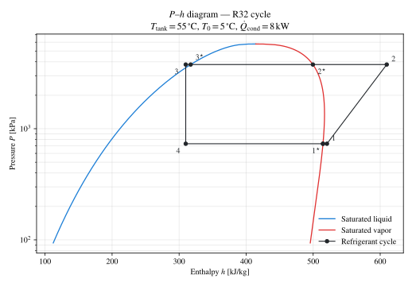
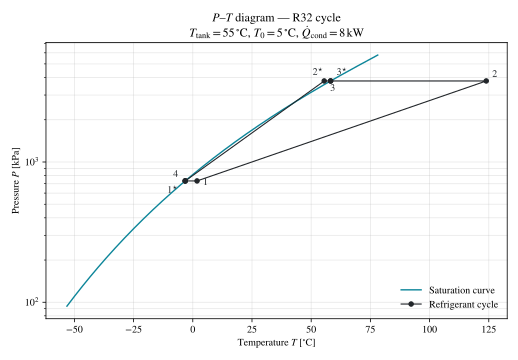

Visualize the cycle (P–h)¶
Every analyze_steady call returns the full thermodynamic state at
each cycle node (compressor in / out, expander in / out, evaporator /
condenser saturation). Plotting those points on a pressure–enthalpy
chart is the fastest way to sanity-check a solved cycle. The
companion P–T view below shows the same cycle in a different plane.
Both figures are rendered with Matplotlib’s built-in mathtext so
all labels — titles, axis names, and node identifiers — are typeset
in math mode without needing a system TeX installation.
P–h diagram¶
{kind=link}

P–h diagram for an R32 ASHPB cycle at the quickstart operating point. The seven labelled nodes follow the library’s internal naming.¶
How to read it¶
Saturation envelope — blue is saturated liquid, red is saturated vapour. The two curves close at the critical point at the top of the dome. The interior is two-phase; outside is single-phase liquid (left) or vapour (right).
Cycle traversal — follow the labelled nodes in order:
\(1^{\star} \to 1\) — slight superheat at the evaporator outlet.
\(1 \to 2\) — compression. Pressure climbs sharply; enthalpy increases by the specific work of the compressor.
\(2 \to 2^{\star}\) — de-superheat in the condenser, at constant pressure, down to the vapour saturation line.
\(2^{\star} \to 3^{\star}\) — condensation. Horizontal segment at the condensing pressure; enthalpy drops as the refrigerant releases its latent heat to the water side.
\(3^{\star} \to 3\) — slight subcool.
\(3 \to 4\) — throttling expansion. Enthalpy is preserved (\(h_4 = h_3\)) while pressure drops to the evaporating pressure.
\(4 \to 1^{\star}\) — evaporation. Horizontal segment at the evaporating pressure; enthalpy climbs as the refrigerant absorbs heat from the source side.
The script¶
The complete script lives at
scripts/visualization/mollier_ph_R32.py.
The core is a saturation-envelope sweep via CoolProp plus a straight
ax.plot of the seven cycle points returned by analyze_steady:
import CoolProp.CoolProp as CP
import matplotlib as mpl
import matplotlib.pyplot as plt
import numpy as np
from physics_hp import AirSourceHeatPumpBoiler
# Match-the-docs math rendering — no system TeX needed.
mpl.rcParams["mathtext.fontset"] = "stix"
mpl.rcParams["font.family"] = "STIXGeneral"
REF = "R32"
ashpb = AirSourceHeatPumpBoiler(ref=REF)
r = ashpb.analyze_steady(T_tank_w=55.0, T0=5.0, Q_ref_cond=8_000.0)
# Saturation envelope (kJ/kg, kPa) — closed at the critical point
T_crit = CP.PropsSI("Tcrit", REF)
P_crit = CP.PropsSI("Pcrit", REF) / 1_000
T_grid = np.linspace(220.0, T_crit - 0.05, 200)
h_liq = np.array([CP.PropsSI("H", "T", T, "Q", 0, REF) for T in T_grid]) / 1_000
h_vap = np.array([CP.PropsSI("H", "T", T, "Q", 1, REF) for T in T_grid]) / 1_000
p_sat = np.array([CP.PropsSI("P", "T", T, "Q", 0, REF) for T in T_grid]) / 1_000
h_crit = 0.5 * (h_liq[-1] + h_vap[-1])
h_liq = np.append(h_liq, h_crit); h_vap = np.append(h_vap, h_crit)
p_sat = np.append(p_sat, P_crit)
def hp(h_key, p_key):
return r[h_key] / 1_000, r[p_key] / 1_000
pts = {
"1*": hp("h_ref_evap_sat [J/kg]", "P_ref_evap_sat [Pa]"),
"1": hp("h_ref_cmp_in [J/kg]", "P_ref_cmp_in [Pa]"),
"2": hp("h_ref_cmp_out [J/kg]", "P_ref_cmp_out [Pa]"),
"2*": hp("h_ref_cond_sat_v [J/kg]", "P_ref_cond_sat_v [Pa]"),
"3*": hp("h_ref_cond_sat_l [J/kg]", "P_ref_cond_sat_l [Pa]"),
"3": hp("h_ref_exp_in [J/kg]", "P_ref_exp_in [Pa]"),
"4": hp("h_ref_exp_out [J/kg]", "P_ref_exp_out [Pa]"),
}
fig, ax = plt.subplots(figsize=(7.2, 5.0))
ax.plot(h_liq, p_sat, label="Saturated liquid")
ax.plot(h_vap, p_sat, label="Saturated vapor")
path = ["1*", "1", "2", "2*", "3*", "3", "4", "1*"]
xs = [pts[p][0] for p in path]
ys = [pts[p][1] for p in path]
ax.plot(xs, ys, marker="o", label="Refrigerant cycle")
ax.set_yscale("log")
ax.set_xlabel(r"Enthalpy $h$ [kJ/kg]")
ax.set_ylabel(r"Pressure $P$ [kPa]")
ax.legend()
To regenerate the figure shipped with the docs:
uv sync --locked
uv run python scripts/visualization/mollier_ph_R32.py
The script pins mpl.rcParams["svg.hashsalt"] so the resulting SVG
is byte-identical across runs — the same convention used by
scripts/validation/samsung_ehs_parity.py.
P–T diagram¶
{kind=link}

P–T diagram for the same R32 cycle. Each node carries its
state-point pressure and temperature directly from
analyze_steady.¶
How to read it¶
Saturation curve — single curve in (T, P) space, terminating at the critical point. Everything below the curve is single-phase vapour or supercritical; everything above is single-phase liquid.
Cycle shape — in this projection, the two isobaric segments collapse onto a single horizontal level each:
The \(4 \to 1^{\star}\) evaporator branch sits on the low pressure \(P_{\mathrm{evap}}\).
The \(2^{\star} \to 3^{\star}\) condenser branch sits on the high pressure \(P_{\mathrm{cond}}\).
Compression (\(1 \to 2\)) climbs and warms the refrigerant; throttling (\(3 \to 4\)) drops the pressure adiabatically at roughly constant enthalpy.
The script¶
scripts/visualization/mollier_pt_R32.py mirrors the P–h script:
uv run python scripts/visualization/mollier_pt_R32.py
The structural difference is the saturation curve — a single
(T, P_sat(T)) sweep instead of two enthalpy branches — and the
cycle points are pulled from T_ref_* and P_ref_* keys
instead of h_ref_* and P_ref_*.
Going further¶
Other refrigerants — change
REF(and re-runanalyze_steadywith the same operating point) to compare cycle shapes across R290, R410A, R134a, etc.Other diagrams — the library also ships a
mollier_diagrammodule with T–h, P–h, and T–s plotters in Visualization. Those use thedartwork_mplstyling layer (not on PyPI), so they’re best used in environments where you’ve installed that layer separately.Multi-point overlays — pass several
analyze_steadyresults to the same figure to compare cycles at different outdoor temperatures or different LWT set-points.